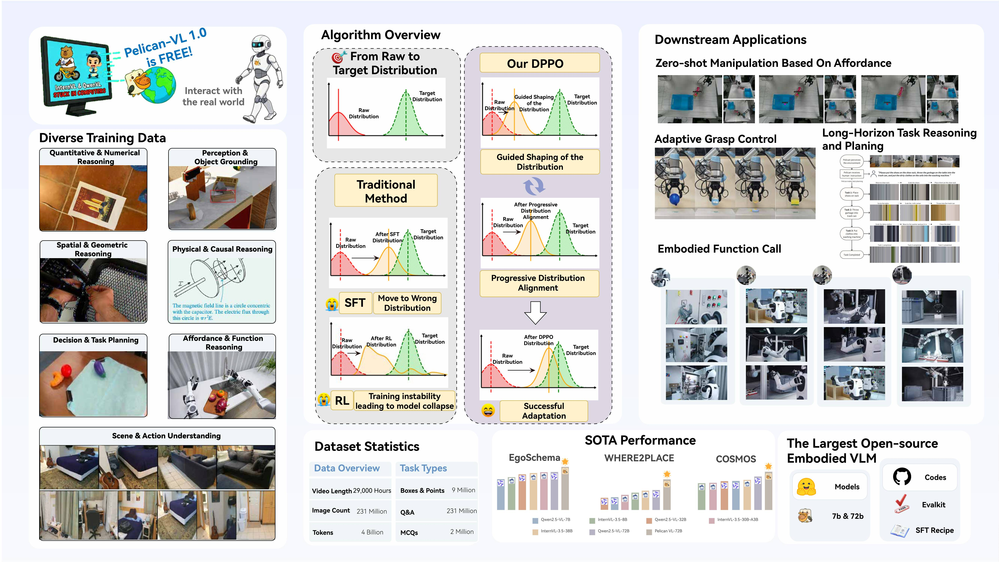

Abstract

This report presents Pelican-VL 1.0, a new family of open-source embodied brain models with parameter scales ranging
from 7billion to 72 billion. Our explicit mission is clearly stated as: To embed powerful intelligence into various embodiments.
Pelican-VL 1.0 is currently the largest-scale open-source embodied multimodal brain model. Its core advantage lies in the
in-depth integration of data power and intelligent adaptive learning mechanisms. Specifically, metaloop distilled a high-quality
dataset from a raw dataset containing 4+ billion tokens. Pelican-VL 1.0 is trained on a large-scale cluster of 1000+ A800 GPUs,
consuming over 50k+ A800 GPU-hours per checkpoint. This translates to a 20.3% performance uplift from its base model and
outperforms 100B-level open-source counterparts by 10.6%, placing it on par with leading proprietary systems on well-known
embodied benchmarks.
Citation
If you use any source codes or the datasets included in this toolkit in your work, please cite the following paper. The bibtex are listed below:
@misc{zhang2025pelicanvl10foundationbrain,
title={Pelican-VL 1.0: A Foundation Brain Model for Embodied Intelligence},
author={Yi Zhang and Che Liu and Xiancong Ren and Hanchu Ni and Shuai Zhang and Zeyuan Ding and Jiayu Hu and Hanzhe Shan and Zhenwei Niu and Zhaoyang Liu and Yue Zhao and Junbo Qi and Qinfan Zhang and Dengjie Li and Yidong Wang and Jiachen Luo and Yong Dai and Jian Tang and Xiaozhu Ju},
year={2025},
eprint={2511.00108},
archivePrefix={arXiv},
primaryClass={cs.LG},
url={https://arxiv.org/abs/2511.00108},
}


.png)
.png)
.png)
.png)
.png)
.png)
.png)
.png)
.png)
.png)
.png)
.png)
.png)
.png)
.png)